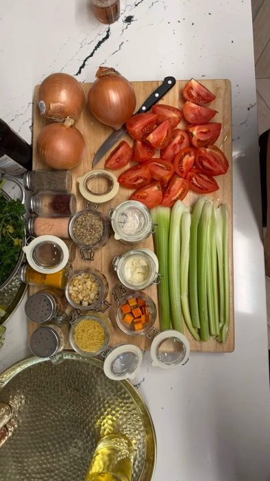
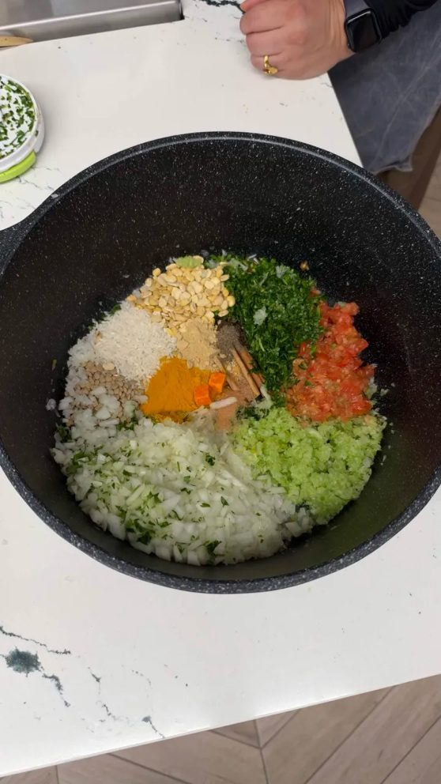
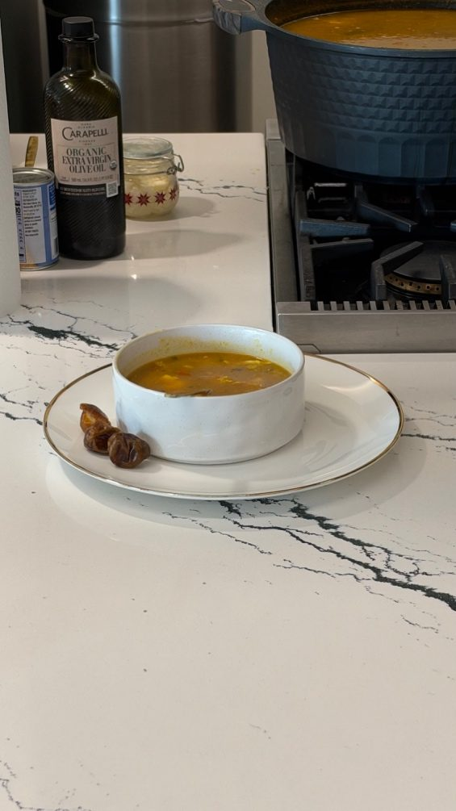

Observation and Experience
While we were learning about the dishes and the history and culture behind them, I honestly felt like I was at a family function. Especially with the special guests observing and teaching, many students had questions to ask on the side while food was being prepared, which is something that happens very often in large family gatherings (in my experience at least). Preparing the dish was Ustadha Raja, and her approach was to explain each step very carefully and make sure we understood the purpose of everything. Most of the nonverbal cues I noticed involved needing space while cooking, and the simple chaos that happens when cooking in general. Most of the time I was having to bob and weave to avoid the chefs while they prepared the Harira for us. Ustadha Raja especially was very deliberate with her movements while cooking the soup. The space, as I described before, felt very much like a familial gathering.
Sensory Reflections
The most memorable smell, for me, was the fact that the Harira smelled exactly the same as another dish I make with my mom, which is called pappu charu (పప్పు చారు) which is a lentil soup including almost completely the same ingredients, eaten with rice usually. This meant that emotionally, I connected with the process greatly, because this is like the dish I make with my mom a lot.
Ingredients and Fusion

The ingredients involved are celery, tomatoes, onions, saffron, butter, lentils, beans, vermicelli, rice, cilantro, eggs, and various spices. They come together and become a soup that blends the tastes together well, but keeps texture. Not too soupy, not too crunchy. This fusion tells me that Moroccan culture values modesty, I think, as well as making sure things are in balance. It also tells me about the hospitality of the culture, because this dish is used to break fast and takes a while to make, showing how they respect the dish and put care into making it. I was not necessarily surprised by the use of any specific ingredient, but I was surprised by the similarity to dishes from my own culture.
Recipe Documentation


From what I remember, the recipe involves celery, tomatoes, onions, saffron, butter, lentils, beans, vermicelli, rice, cilantro, eggs, and various spices. Once they are minced and put into a pot, they are boiled with water for about 30 minutes until a broth has formed. The longer it is boiled, the thicker it gets, raw eggs are added while cooking, which cooks into eggy ribbons in the soup.
Personal Takeaways
The highlight moment for me was just generally existing and talking with people that I never would have tried to talk to if it weren’t for this class. Believe it or not I have some amount of social anxiety, and so actually making new friends that care is hard for me. This class helped me make new friends that I have seen around campus all the time but never actually got to talk to and experience things with. After the class I felt rather comfortable, and ended up taking a long nap once I got home.
← Back to the journal